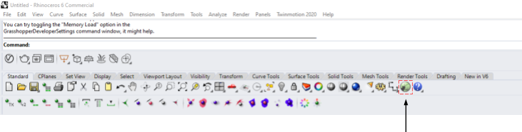
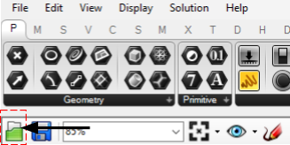
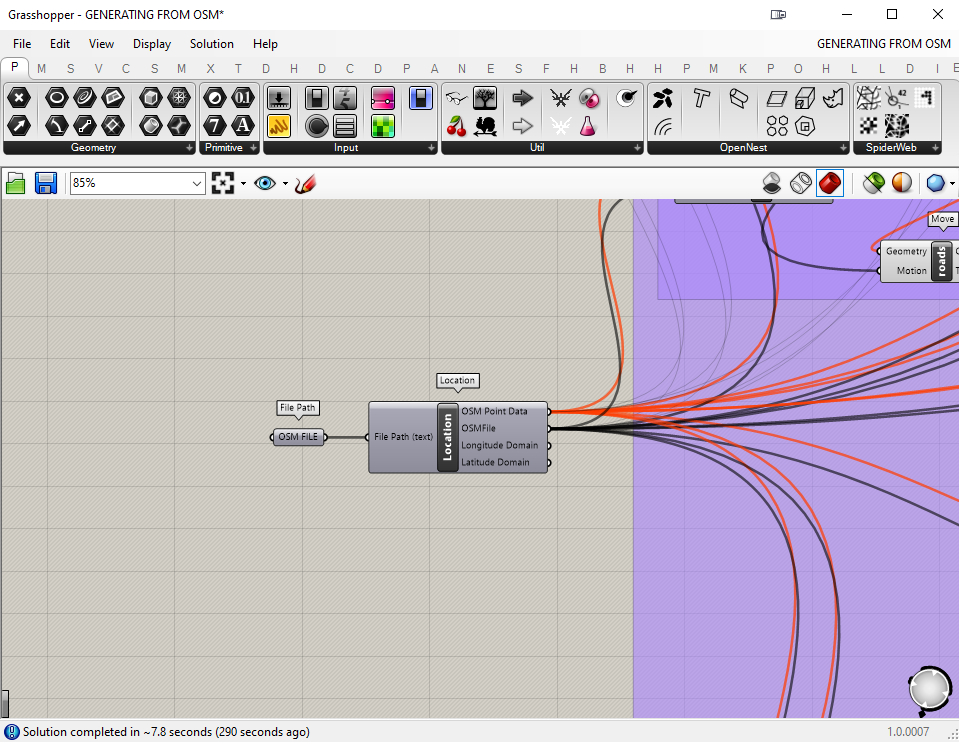
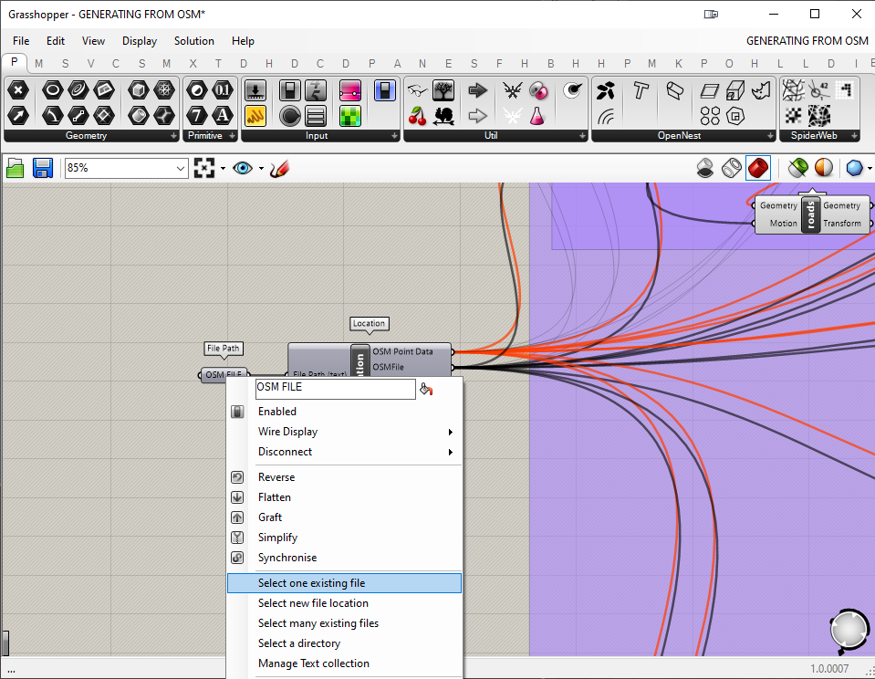
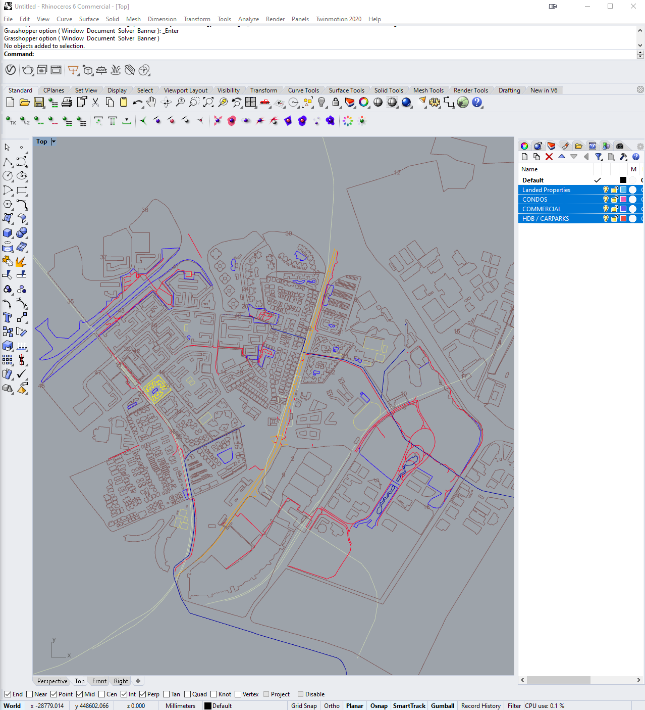
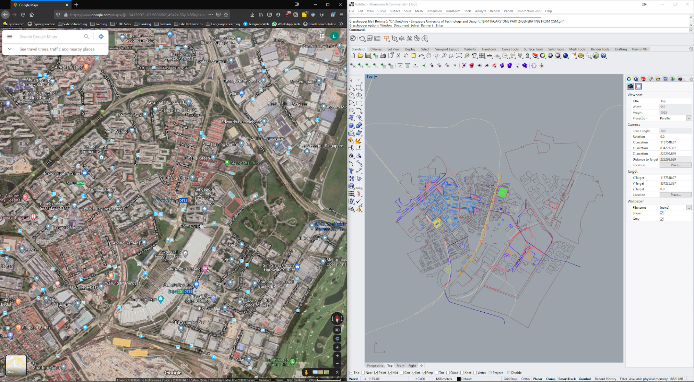
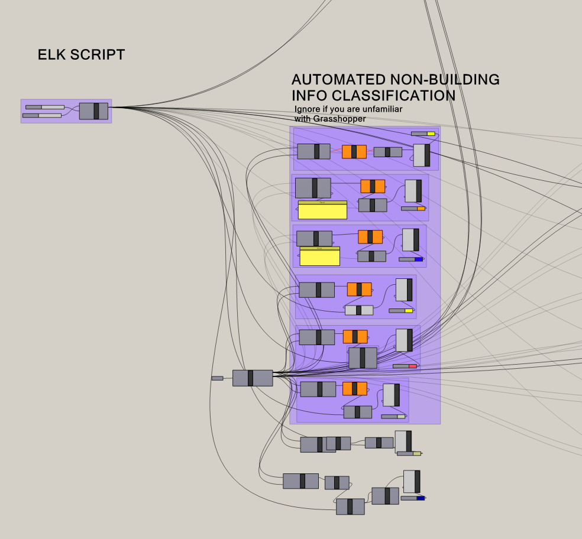
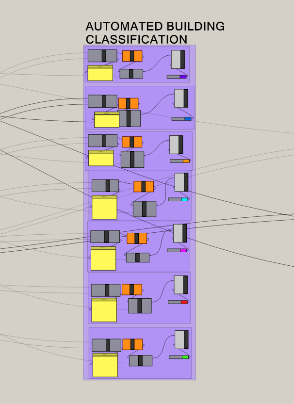
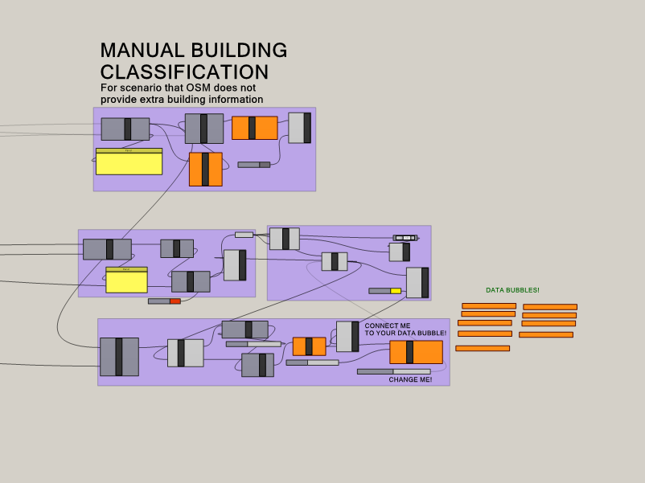

This step is for Grasshopper to output the data into Rhino and for you to cross reference the output data with information that is displayed in Google Maps or OpenStreetMaps
Open up Rhino 6 and start up Grasshopper (GH)
Press the “OPEN” icon and select the provided GH file named “GENERATING FROM OSM.gh”
Find the component bubble “OSM FILE” which is located at the left of the script. Right click and drag the canvas to move around.
Right click the “OSM FILE” bubble, select “Select one existing file” and locate your recently downloaded OSM file.
Once selected, the script will automatically generate a map in Rhino
Open up Google Maps or Open Street Maps and compare the generated map, taking special attention to the outputs that are under “AUTOMATED BUILDING CLASSIFICATION”. Double check if the classifications are in order. You will need to constantly refer back to Google Maps or Open Streets Map for the manual classifications as well.
The script is segregated into three major sections. They are:
The first section is labelled AUTOMATED NON-BUILDING INFO CLASSIFICATION, which separates out information such as major and minor roads and turns them into curves. You may ignore this portion, especially if you are unfamiliar with Grasshopper.
The second section is labelled AUTOMATED BUILDING CLASSIFICATION. This portion helps separate the different types of buildings that exist in your map based on the data that is tagged within OSM. Examples of classification are landed properties, offices and apartments. Within each category, a display is also given to showcase any building information that is available. However, do note that OSM might not give all the relevant data for the automated classification to work.
The third section is labelled MANUAL BUILDING CLASSIFICATION. To help remedy the lack of data, this portion of the script is designed in a way where you will be able to extract the building footprints within the confines of land boundaries and categorize them according to their building types.
